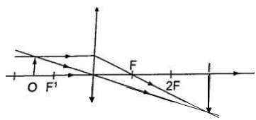

The linear magnification produced by a lens defined as the ratio of the height of the image to the height of the object, denoted by letter ‘m’ ,therefore; m = height of the image/height of the object.
Magnification is also given by = distance of the image from the lens/ dist. of object from lens. m = v/u
Example
An object 0.05 m high is placed 0.15 m in front of a convex lens of focal length 0.1 m. Find by construction, the position, nature and size of the image. What is the magnification Solution Let 1 cm represent 5 cm. hence 0.05 m = 5 cm = 1 cm – object height 0.15 m = 15 cm = 3 cm 0.1 m = 10 cm = 2 cm – focal length. 
Image formed is – image is beyond 2F - Inverted - Real - Magnified